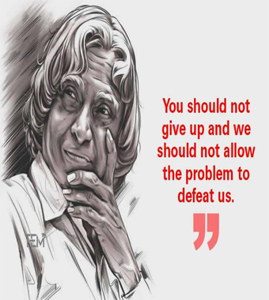

Dr. APJ Abdul Kalam was the eleventh President of India, serving from 2002 to 2007. He was born on May 15, 1931, in Rameswaram, Tamil Nadu, and studied physics as well as aeronautical engineering. In 2002, APJ Abdul Kalam was chosen as India’s 11th President, Having backing from both the ruling Bharatiya Janata as well as the opposing Indian National Congress After his one tenure as President, APJ Abdul Kalam resumed civilian life in teaching, writing, and public service.
Education and Struggles
Kalam was extremely earnest and diligent in his studies, but his teachers recognised him as having a tremendous desire to study. He finished his secondary studies at Ramanathapuram’s Schwartz Secondary School. In 1955, he graduated from Saint Joseph’s College at Tiruchirappalli with a diploma in physics. He subsequently went to Madras to further his education, graduating from the Engineering And Technology Institute with a diploma in aircraft engineering. His dream of becoming a military pilot was crushed when the IAF only had eight slots available, and he finished ninth. Following graduation, he worked as a scientist for the “Defense Research Service” and the “Aeronautical Development Establishment.”
APJ Abdul Kalam as a Scientist
On graduation from the University of Madras in 1960, APJ Abdul Kalam returned to the Defence Research and Development organisation Organisation as a scientist (DRDO). He began his career by creating a tiny hovercraft, however his position with the DRDO did not persuade him. APJ Abdul Kalam was moved to the Indian Space Research Organisation (ISRO) in 1969 as the project head of India’s first Satellite Launch Vehicle, which successfully launched the Rohini satellite into relatively near orbit in July 1980.
Raja Ramanna also invited APJ Abdul Kalam to see the country’s first nuclear test, Laughing Buddha, as the spokesman of TBRL. However, he had never participated in its development.
Presidency
Sir Kalam was the rightful 11th Indian President. His presidency lasted from July 25, 2002, to July 25, 2007. He was elected with a huge margin of victory in a presidential election in 2002. The National Democratic Alliances’ nomination for President was endorsed by the Samajwadi Party and the National Congress Party. He was often referred to as the people’s President because of his numerous contributions to the well-being of the people and the country. He was daring and brave enough to make and implement difficult, delicate, or contentious judgments. Perhaps the most difficult Act he had to sign was the “office of profit.” Under the English Settlement Act of 1701 in 1701, the “office of profit” indicates that no one individual who is a professional setup process underneath the royal family or who has any arrangement with or is receiving a pension from the prince does have the ability to work for the “House of Commons.” This will give the royal family no influence on administrative conditions.
Awards and Achievements
Kalam received several honours during his lifetime. In 1981, he was granted the “Padma Bhusan,” the Republic of India’s third-highest civilian honour. Then, in 1990, he was granted the Padma Vibhushan, the Republic of India’s second-highest civilian honour.
In 1997, the Indian government awarded Abdul Kalam the “Bharat Ratna,” the Republic of India’s highest civilian honour, in addition to the “Indira Gandhi Award of National Integration” even by “Indian National Congress,” which is named after former Prime Minister Indira Gandhi. The following year, in 1998, he was given the “Veer Savarkar Award.” The SASTRA “Ramanujan Award” was bestowed to him in 2000. In 2007, he was awarded the “King Charles II Medal” by the United Kingdom for his contributions to scientific advancements in India. In 2009, he was awarded the “Hoover Medal,” an American honour awarded to outstanding persons who make extracurricular efforts.
Books he wrote
In his lifetime, he published several works, including Agni ki Udaan (1999), India 2020 (1998), Ignited Minds (2002), Naa Jeevana Gamanam (2013), Turning Points: A Journey Across Difficulties (2012), Indominate Spirit (2006), and You Are Born To Blossom (2007). (2008). You can include them in the APJ Abdul Kalam Essay and some other writers. They have devoted books to him, including APJ Abdul Kalam by Arun Tiwari and Advantage of India by Srijan Pal Singh.
Demise
Shillong, Meghalaya, on July 27, 2015.
The day we left a man who desired a miracle for India’s youth was a bad day for India. He falls inside the lecture hall only 5 minutes into it, about 6:35 p.m. In critical condition, he was brought to ‘Bethany Hospital.’ He was maintained in the intensive-care unit but showed no signs of life, and he was certified dead at 7:45 p.m. because of cardiac arrest.
APJ Abdul Kalam is a very kind-hearted individual who generously performed many things for India. He is indeed the reason we have nuclear weapons today. He not only became President & did a lot of good for India, but he also made a significant contribution to missile history.
Avul Pakir Jainulabdeen "A. P. J." Abdul Kalam (15 October 1931 – 27 July 2015) was the 11th President of India from 2002 to 2007. A career scientist turned politician, Kalam was born and raised in Rameswaram, Tamil Nadu, and studied physics and aerospace engineering. He spent the next four decades as a scientist and science administrator, mainly at the Defence Research and Development Organisation (DRDO) and Indian Space Research Organisation (ISRO) and was intimately involved in India's civilian space program and military missile development efforts. He thus came to be known as the Missile Man of India for his work on the development of ballistic missile and launch vehicle technology. He also played a pivotal organizational, technical, and political role in India's Pokhran-II nuclear tests in 1998, the first since the original nuclear test by India in 1974.
PAPER BOY TO PRESIDENT
Several months back, after finishing an interview with Dr APJ Kalam, and just before leaving his Rajaji Marg residence he made me repeat these three words in a schoolteacher’s tone: perseverance, hard work and patience.This, he said, was alone the path to progress. Later, much later, I realised, that those were the very words he’s lived by all through his life. They are both philosophical and practical, quite like the world he grew up in as a boy in the island town of Rameswaram, in south India.
His father, a humble boat owner, Jainulabdeen, was a devout Muslim and a close friend of the Rameswaram temple priest. Kalam was brought up in a multi-religious, tolerant society; one with a progressive outlook. His father often quoted from the Quran to make the young Kalam see the world without fear. He had seven siblings, and a doting mother who, at times, made chappatis for Kalam, while the others were given rice as Kalam’s day would start at four in the morning and end at 11 pm.
His father wasn’t educated, but he wanted Kalam to study. Kalam would get up at 4 am, bathe, and then go for his mathematics class, which was taught by a teacher who took only five students in the whole session; and bathing before class was a condition he had laid to all his students. After his morning class, Kalam along with his cousin Samsuddin went around town distributing the newspaper. As the town had no electricity, kerosene lamps were lit at his home between 7 pm and 9 pm. But because Kalam studied until 11, his mother would save some for him for later use.
Being a bright student, Kalam always had the support of his schoolteachers. Schwarzt High School’s Iyadurai Solomon often told Kalam that if he truly, intensely desired something, he would get it. “This made me fearless,” said Dr Kalam. And outside school, Ahmed Jallaluddin, who later became his brother-in-law, and Samsuddin, encouraged Kalam to appreciate nature’s wonders. So at once, while growing up, he was exposed to a religious and a practical way of looking at the world.
The flight of birds had fascinated him since he was a boy, but it was years later he realised that he wanted to fly aircrafts. After finishing school, he took up Physics at St Joseph’s College, Trichi, but towards the end he was dissatisfied. When he discovered aeronautical engineering, he regretted having lost three precious years. But he was glad to have discovered Leo Tolstoy, Thomas Hardy and F Scott Fitzgerald and other English poets in his college years.
At Madras Institute of Technology (MIT), Chennai, where Kalam studied aeronautics, he learnt an important lesson: the value of time. He was leading a project on system design, when one day the principal walked into the class to see his work. He appeared dissatisfied and told Kalam that he wanted the project finished in the next two days; else his scholarship aid would be withdrawn. That unsettled Kalam; years of his father’s hardships would come to naught. Kalam worked without food and sleep. On the last day, his professor came to check on his progress. He was impressed and said: “I was putting you under stress and asking you to meet a difficult deadline,” recounted Dr Kalam.
Although Kalam has led several projects in his professional life, he’s treated each like his last. Such was his passion. No wonder, he’s always led projects. His advisor, Major General R Swaminathan explained Kalam’s success as a leader. “He has this unique capability of being a boss as well as a worker. He can take on any role with ease.”
When Dr Kalam’s first major project SLV 3-failed the first time he was almost shattered. Also, around this time, Kalam’s childhood mentor, Jallaluddin, died. “A part of me too passed away…” said Dr Kalam. But he never thought of quitting after SLV-3. “I knew that for success, we have to work hard and persevere.” And so, SLV-3 was launched again, this time with success. He drew strength from philosophy, religion and literature to tide by his professional setbacks; also a life with few companions. In time, he also learnt to deal with professional jealousy and uncooperative team members.
Success followed Dr Kalam. Prithvi, Agni, Akash, Trishul and Nag missiles were huge successes. He was awarded the Padma Bhushan and Bharat Ratna, and then he became the President of India; one of the few presidents who have touched the hearts of so many poor children in the country. Because he also came from a poor background, he knew the power of education in changing one’s futur.
Quotes
You have to dream before your dreams can come true.
A dream is not that which you see while sleeping, it is something that does not let you sleep.

You should not give up and we should not allow the problem to defeat us.
If you want to shine like a sun, first burn like a sun.